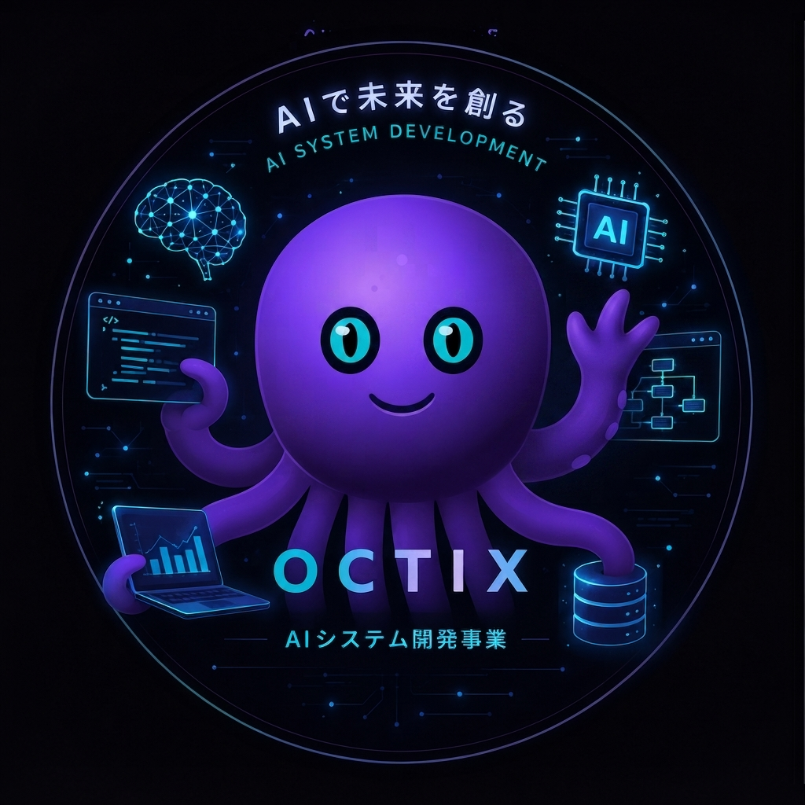

OCTiX受託開発は、時間と人数の分だけしか売上が伸びない。ひとつ作って、何度でも届けられるものには上限がない。OCTiXは、工場の現場で磨いてきた課題解決の勘所を、ソフトウェアという形に変えていく。
OCTiXも同じ発想でつくる。ひとつの基盤に、必要な腕（機能）を後から増やしていく。まず動かすのは、最初の3本。
社員を一人雇う代わりに、現場の定型業務を任せられるAIの土台。
現場ごとに必要な機能だけを、あとから追加していく。
初期投資を抑え、使った分だけ月ごとに払う仕組み。
OCTiXは開発の初期段階にある。まずひとつの小さな機能を仕上げ、実際の現場で使ってもらうところから始めている。進捗はnoteで公開している。
現場の課題や、一緒に検証してくれる工場を探しています。気軽に連絡してください。